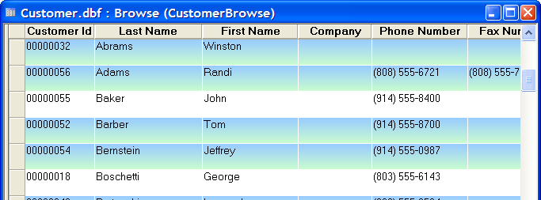

Browse Banding
You can specify the background color and style of alternate groups of browse rows. This feature, named Green Banding is illustrated below. Each group can be any number of rows and have any fill style.
This browse has alternate bands of light green and white.

This browse has two bands of gradient color and one band of white. Picture
{kind=link}

To apply banding to a browse.
Display the Browse tab of the Control Panel.
Select the browse to modify and click Design.
Click Browse > Browse Properties... .
Display the Browse tab of the Properties dialog.
Click Row Color Properties to display the Row Color Properties dialog.
Define color group one.
Select "Color 1" and check Enabled.
Define its fill style and color.
Select and entry from the Number of Rows list.
Define color group two.
Select "Color 2" and check Enabled.
Define its fill style and color.
Select and entry from the Number of Rows list.
Optionally, define color group three.
Optionally, define color group four.
Click OK.
Limitations
Desktop applications only.
See Also